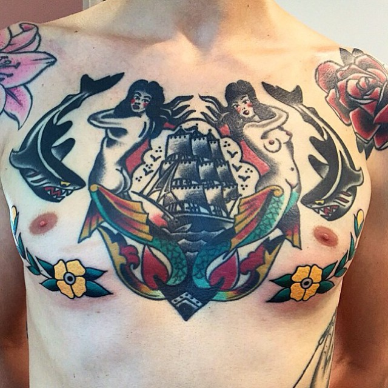
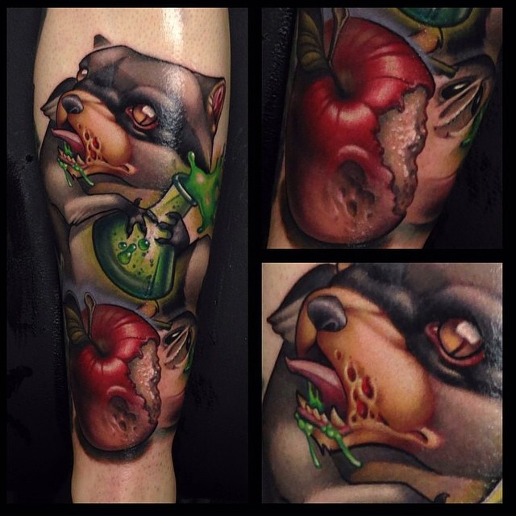

Los elementos comunes de este estilo comparten cercanía semántica con el mundo de los marineros (anclas, barcos, botellas de licor, sirenas, etc.) o con el imaginario estadounidense (águilas americanas, cherokees, etc.), aunque no exclusivamente.
La década de 1970 se fecha como el inicio de una nueva tendencia de tatuajes en Estados Unidos. A partir de la síntesis de estilos antiguos y tradicionales (en especial el irezumi japonés y la vieja escuela estadounidense), se crearon nuevas imágenes caracterizadas por la exageración, tanto en el motivo como en la técnica con que este se plasma. La apariencia de movimiento del tatuaje es uno de sus rasgos más distintivos.

Su inspiración es la convivencia y la posible síntesis de los opuestos: lo real y lo abstracto, la tecnología y la humanidad, la realidad y sus desechos. “Los opuestos que ahí se encuentran intentan llevar a una danza creativa para armonizar y sintonizarse con el cuerpo”, dice Merschky.
En este sentido, el trash polka está construido notablemente sobre el contraste: los elementos realistas se mezclan con otros más naturales, con inclusión de gráficos geométricos y letras.
Por las necesidades del estilo, casi siempre se le encuentra en tatuajes de gran tamaño.
Como su nombre indica, estos tatuajes se caracterizan por el uso exclusivo de tinta negra. Las formas son variadas pero casi siempre, por el simbolismo del trazo en negro, se utilizan para dibujar figuras geométricas, religiosas o de inclinaciones abstractas y artísticas.
Probablemente uno de los estilos más exquisitos. Como en la pintura, los tatuajes hechos con esta técnica dependen únicamente de puntos para expresar sus características, desde su significado general hasta elementos técnicos como la profundidad o el sombreado. Se dice que justo las sombras realizadas con puntillismo son inigualables e identificables de inmediato.
Quizá por esta razón, el puntillismo y el blackwork tienen una relación de cierta complicidad; como se ve en esta imagen, los trabajos de puntillismo casi siempre se encuentran en tinta negra (con uso ocasional del gris y el rojo) y tienen motivos similares a los del blackwork.
Sin duda uno de los estilos más populares de los últimos años, los tatuajes geométricos han seducido a muchísimas personas por la enorme expresividad lograda con el aparente minimalismo de recursos. Lo usual es realizarlos en tinta negra y con algunas zonas de puntillismo. Además de figuras geométricas como tal, también se le encuentra combinado con patrones de la naturaleza.
Otra tendencia contemporánea es el terminado de bosquejo, una elección paradójica que hace ver un tatuaje como si se tratara de un borrador, una obra no terminada o apenas un ensayo.
Estilísticamente su origen podría encontrarse en los cuadernos de artista, en los que es usual que una imagen esté rodeada de las líneas guía que ayudaron a trazarla o que esté coloreada a medias, como a veces también ocurre con tatuajes de este tipo.
{kind=link}
{kind=link}
{kind=link}
{kind=link}
{kind=link}
{kind=link}
{kind=link}